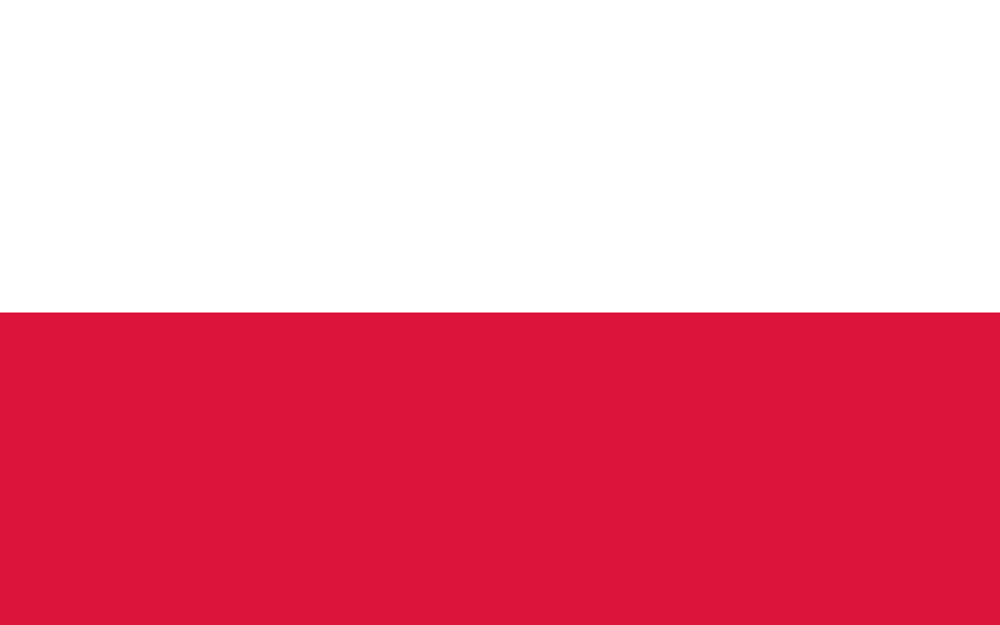

Volver
Goleadores de los mundiales
Goleadores en todos los mundiales
| Puesto |
Jugador |
Goles |
Mundiales |
Nacionalidad |
| 1 |
Miroslav Klose |
16 |
2002-2006-2010-2014 |
 |
| 2 |
Ronaldo |
15 |
1994 1998 2002 2006 |
 |
| 3 |
Gerd Muller |
14 |
1970 1974 |
|
| 4 |
Just Fontaine |
13 |
1958 |
 |
| 5 |
Pele |
12 |
1958 1962 1966 1970 |
|
| 6 |
Juergen Klinsmann |
11 |
1990 1994 1998 |
|
| 6 |
Sandor Kocsis |
11 |
1954 |
 |
| Puesto |
Jugador |
Goles |
Mundiales |
Nacionalidad |
| 7 |
Gabriel Batistuta |
10 |
1994 1998 2002 |
 |
| 7 |
Teofilo Cubillas |
10 |
1970 1978 1982 |
 |
| 7 |
Grzegorz Lato |
10 |
1974 1978 1982 |
 |
| 7 |
Gary Lineker |
10 |
1986 1990 |
 |
| 7 |
Thomas Mueller |
10 |
2010 2014 2018 |
|
| 7 |
Helmut Rahn |
10 |
1954 1958 |
|